좌표계와 변환 — 로봇은 어디를 잡을지 어떻게 아는가¶
로봇 비전(robot vision) · 2부작 중 2부. 1부는 로봇이 부품을 어떻게 보는지였습니다. 이 글은 "저기 보인다"를 "그러니 내 팔은 여기로 가야겠다"로 바꾸는 이야기예요.
1부에서 파이프라인은 부품의 위치와 자세(pose)를 알려줬죠. 그런데 그게 카메라의 시점이었습니다. 정작 로봇이 사는 곳은 거기가 아니에요. 로봇은 자기 좌표계에서 움직입니다. 그래서 건너야 할 고비가 하나 더 남습니다. 자율주행차·AR 필터·카메라로 유도되는 모든 로봇 팔이 똑같이 밑바탕에 깔고 있는 기하학인데, 그것들이 나오기 훨씬 전에 이미 정리가 끝난 이야기예요.
전부를 한 문장으로 줄이면 이렇습니다.
"부품이 어디 있나?"는 누구에게 묻느냐에 따라 숫자가 달라진다 — 카메라냐, 손목이냐, 아니면 로봇의 베이스냐. 할 일은 그 사이를 번역하는 것.
그리고 먼저 안심시켜 드릴게요.
이 계산을 직접 할 일은 절대 없습니다. 산수는 로봇의 컴퓨터가 다 합니다. 이 글은 그저 그 아이디어를 그림과 일상 이야기로 풀어줄 뿐이에요.
30초 요약¶
- 좌표계(frame)는 그냥 시점입니다. 같은 물리적 지점도 시점마다 숫자가 달라져요.
- 두 좌표계 사이를 오가려면 변환(transform)이 필요합니다. 이동과 회전, 합쳐서 숫자 여섯 개예요.
- 이걸 적용할 땐 늘 먼저 회전, 그다음 이동입니다. 순서가 중요해요.
- 좌표계가 줄줄이 이어진 사슬(부품 → 카메라 → 손목 → 베이스)은 변환을 하나씩 차례로 적용해 풉니다.
- 코드가 변환 하나를 4×4 격자, 즉 행렬(matrix)로 저장하는 이유는 딱 하나예요. 격자는 곱하기 한 번으로 사슬이 죽 이어지거든요.
핵심 아이디어 — "좌표계"는 곧 시점이다¶
나와 친구가 방 양쪽에 서서 같은 컵을 봅니다. 나는 "오른쪽으로 2, 앞으로 3"이라고 하는데, 친구는 같은 컵을 두고 "왼쪽으로 2, 뒤로 3"이라고 해요. 같은 컵인데 숫자가 다릅니다. 둘 다 틀린 게 아니에요. 각자 자기 자리에서 쟀을 뿐이죠.
그 "자기 자리"가 바로 좌표계(frame of reference)입니다.

로봇이 부품을 집을 땐 네 개의 시점이 부품 위치를 두고 합의를 봐야 합니다.
부품 → 카메라 → 손목 → 베이스.
카메라가 부품을 봅니다. 그 카메라는 손목에 볼트로 물려 있고요. 손목은 팔에 달려 있고, 팔은 베이스에 박혀 있습니다. 그리고 로봇이 실제로 움직일 수 있는 유일한 좌표계가 바로 그 베이스예요. 그러니 결국 할 일은 이겁니다. 부품 위치를 카메라가 본 그대로 받아서, 베이스가 보는 식으로 다시 말해주기. 그 번역이 좌표 변환(transform)입니다.
모든 변환은 두 동작으로 쪼개진다 — 이동과 회전¶
변환이라니 어렵게 들리지만, 알고 보면 일상적인 두 동작을 겹쳐놓은 것뿐이에요.
이동(translation). 쉽게 말해 자를 옆으로 죽 미끄러뜨리는 거예요. 앨리스의 자는 벽에서 시작하고, 밥의 자는 거기서 3만큼 옆에서 시작한다고 해볼게요. 앨리스 자로 "5"인 컵이 밥의 자로는 "2"입니다. 바꾸려면 그 간격만 더하거나 빼면 돼요. 3D에서는 한 방향이 아니라 세 방향으로 미끄러진다는 것만 다릅니다.
회전(rotation). 쉽게 말해 보는 방향을 트는 거죠. 앨리스는 북쪽을, 밥은 동쪽을 봅니다. 앨리스에게 "바로 앞"인 컵이 밥에게는 "내 왼쪽"이 되죠. 바꾸려면 한쪽이 다른 쪽에 대해 얼마나 틀어져 있는지 알아야 합니다. 3D에서는 세 가지 방식으로 돌 수 있어요.

세 가지 회전, 이름 붙이기
2D에서 회전은 숫자 하나 — 각도 하나 — 로 끝납니다. 3D에서는 셋이 필요해요. 전투기를 떠올리면 딱이에요. 전투기는 롤(roll)(날개를 기울여 진행 축으로 돎), 피치(pitch)(기수를 위아래로), 요(yaw)(기수를 좌우로)를 하잖아요. 로봇 컨트롤러는 보통 이 셋을 W, P, R로 씁니다. W가 롤(X축 중심), P가 피치(Y축 중심), R이 요(Z축 중심)예요. 같은 개념을 로봇식 약칭으로 부르는 것뿐입니다.
하나로 묶기 — 숫자 여섯 개, 순서대로¶
그러니까 변환은 결국 숫자 여섯 개입니다. 얼마나 이동할지 셋, 얼마나 회전할지 셋.
그런데 누구나 한 번쯤 걸려 넘어지는 함정이 하나 있어요. 두 동작은 순서를 지켜야 합니다 — 먼저 회전, 그다음 이동. 절대 거꾸로 하면 안 돼요.
왜냐고요? 회전은 언제나 원점을 중심으로 돕니다. 먼저 미끄러뜨려 버리면 점을 원점에서 멀리 옮겨놓은 셈이 되고, 그 상태에서 돌리면 점이 커다란 호를 그리며 엉뚱한 데로 날아가요. 점이 아직 원점에 있을 때 돌리고, 그다음 제자리로 옮겨야 합니다.
옷 입는 순서랑 똑같아요. 셔츠 먼저, 재킷은 그다음. 숫자 여섯 개는 그대로인데, 순서가 전부를 가릅니다.
그림 하나로 보면 이렇습니다. 같은 자리에 있는 점 하나가 좌표계마다 다른 숫자를 갖는데, 바꾸는 길이 바로 그 순서예요 — 회전한 다음, 이동.

3D도 방식은 똑같습니다. 좌표 하나·각도 하나 대신 좌표 셋·각도 셋일 뿐이에요.
연필로 직접 풀어보면
좌표계 B가 좌표계 A 안 (5, 3)에 30° 돌아간 채 있고, 점은 B에서 (2, 0)에 있다고 해봅시다. 이 점이 A에서는 어디인지 찾으려면:
1단계 — 회전. (2, 0)을 30° 돌리기:
x = 2·cos 30° − 0·sin 30° = 1.732
y = 2·sin 30° + 0·cos 30° = 1.000
2단계 — 이동 더하기. (5, 3)을 더하기:
X = 1.732 + 5 = 6.732
Y = 1.000 + 3 = 4.000
A에서의 답: (6.732, 4.000). 먼저 회전, 그다음 이동 — 방금 말한 그 순서 그대로예요.
우리 로봇이 실제로 하는 일 — 부품 → 카메라 → 손목 → 베이스¶
변환의 진짜 힘은 줄줄이 이어 붙일 수 있다는 데 있어요. 카메라 → 손목을 알고 손목 → 베이스를 알면, 둘을 차례로 적용해 카메라 → 베이스를 얻습니다. 몇 단계를 거치든 상관없죠 — 세상의 모든 카메라 유도 로봇이 정확히 이걸 합니다. 기본 중의 기본이에요.
그리고 이 파이프라인에서 재밌는 점은, 링크 셋이 저마다 다른 데서 온다는 거예요. 하나는 AI, 하나는 고정, 하나는 실시간.

- 부품 → 카메라 — AI에서. 1부 비전 파이프라인이 내놓은 결과예요. AI가 부품 위 특징점을 찾고, PnP라는 단계가 렌즈 앞에서 부품이 어떤 포즈인지 계산해냅니다. (PnP는 잠시 뒤에.)
- 카메라 → 손목 — 고정. 카메라가 손목에 볼트로 붙어 있으니 이건 변할 일이 없어요. 딱 한 번 재두고(아래의 핸드-아이 캘리브레이션, hand-eye calibration), 파일에 저장해서 두고두고 씁니다.
- 손목 → 베이스 — 실시간. 이건 팔이 움직일 때마다 바뀌죠. 그런데 계산할 필요가 없어요. 그냥 로봇한테 물어보면 됩니다. "네 손목 지금 어디야?" 하면 자기 센서가 숫자 여섯 개로 답해주거든요.
이 셋을 차례로 적용하면 부품의 포즈가 베이스 좌표계로 나옵니다. 이제 로봇은 어디로 가야 할지 정확히 알아요.
첫 번째 링크를 뜯어보면 — 평평한 사진이 3D 포즈가 되기까지 (PnP)¶
사진은 평평합니다. 그 안 어디에도 "250mm 떨어져 있고 12° 기울어짐" 같은 게 적혀 있지 않아요. 그걸 되살리려면 재료가 둘 필요합니다.
렌즈의 "자" — 내부 파라미터(intrinsics, K). 렌즈마다 세상을 픽셀로 옮기는 자기만의 고유한 성질이 있어요. 얼마나 확대해서 보는지(초점거리, focal length), 센서 위 정확히 어디를 겨누는지(주점, principal point). 이 값들을 하나로 묶은 게 흔히 K(카메라 행렬)라고 부르는 것인데, K만 있으면 소프트웨어가 "이 픽셀에 찍힌 점"을 "정확히 이 방향을 가리키는 광선"으로 바꿀 수 있습니다.
기하 — PnP. AI가 부품에서 찾아낸 점 몇 개, 부품의 알려진 3D 모델, 그리고 방금 그 렌즈 자만 있으면, PnP는 그 점들이 딱 그 자리에 맺히게 만드는 실제 부품의 위치·기울기를 하나로 찾아냅니다. 머그컵 하나를 한눈에 보고 거리를 가늠하는 우리 눈의 재주와 똑같아요. 컵의 실제 크기를 아니까, 사진처럼 보이게 하는 거리와 각도가 딱 하나뿐인 거죠.
각각을 조금만 더
내부 파라미터. 초점거리는 그냥 확대율이에요. 휴대폰 광각 렌즈냐, 탐조용 망원렌즈냐의 차이죠. 주점은 렌즈가 센서에서 실제로 겨누는 지점인데, 정확히 픽셀 정중앙인 경우는 거의 없습니다. 렌즈는 직선도 휘게 만드는데 프레임 가장자리로 갈수록 심해요. 이른바 어안·GoPro 특유의 볼록함이죠. 왜곡 계수 몇 개면 소프트웨어가 이걸 펴줍니다. 이 전부가 딱 한 번 하는 카메라 캘리브레이션(camera calibration)에서 나와요.
PnP는 "Perspective-n-Point"의 약자입니다. 부품에서 미리 잰 3D 점에 렌즈 자를 더해, 검출된 점들 위로 모델을 되투영해 딱 맞아떨어지는 단 하나의 포즈를 내놓아요. 그 답이 바로 사슬이 시작되는 부품 → 카메라 링크입니다.
고정 링크는 어디서 오나 — 체커보드 트릭¶
카메라 → 손목은 줄자로 잴 수가 없어요. 렌즈의 광학 중심이 하우징 안에 꽁꽁 숨어 있거든요. 그래서 수학이 대신 풀게 둡니다. 딱 한 번만요.

셀 안에 체커보드(checkerboard)를 놓고 꼼짝 않게 둡니다. 그런 다음 로봇이 팔 위치를 바꿔가며 약 스무 번 그걸 찍는데, 매번 사진과 손목 값을 함께 기록해요. 판은 한 번도 안 움직였으니, 스무 번의 관측 전부가 단 하나의 카메라 → 손목 변환에 들어맞아야 합니다. 수학이 딱 맞아떨어지는 그 하나 — 예를 들어 "앞으로 45mm, 위로 30mm, 피치 5°" — 를 찾아서 캘리브레이션 파일에 저장해요. 누가 카메라를 떼어내지 않는 한 다시 할 일은 없습니다.
왜 하필 체커보드고, 왜 스무 번인가
눈을 가린 채, 정체 모를 각도로 손에 쥔 손전등으로 표적을 비춰 보라고 상상해 보세요. 손전등과 손 사이 각도를 모르면 계속 빗나갑니다. 그래서 알려진 표지를 여러 손 위치에서 스무 번쯤 비춰보고, 빗나가는 패턴에서 그 각도를 역으로 알아내는 거예요. 그게 핸드-아이 캘리브레이션입니다. 카메라가 "눈(eye)", 손목이 "손(hand)"이고요. (이 이름은 1980년대 로보틱스 논문에서 왔습니다.)
체커보드를 쓰는 이유는 세 가지예요. 기하가 완벽하게 알려져 있고(사각형 크기를 우리가 정했으니), 코너를 컴퓨터가 아주 정밀하게 집어내며, 그런 코너가 잔뜩(50개 넘게) 있죠. 데이터 점이 많을수록 답이 좋아지니까요. 몇 mm, 몇 도만 어긋나도 집는 게 죄다 빗나가니, CAD 도면에서 볼트 위치를 눈대중하느니 수학이 한 번에 못 박게 두는 겁니다.
왜 코드는 격자(행렬)를 쓰나¶
로봇이 이걸 행렬(matrix)로 처리한다는 말을 듣게 될 거예요. 여기서 행렬은 그저 변환의 숫자 여섯 개를 깔끔한 4×4 격자에 담아둔 것입니다. 왼쪽 위 블록이 회전을, 한 열이 이동을 담고, 채움용 한 줄이 산수를 딱 맞아떨어지게 하죠.
왜 굳이 그럴까요? 격자는 깔끔하게 곱해지고, 컴퓨터는 그걸 빠르게 곱하기 때문이에요. 아까 손으로 했던 이어 붙이기 — 카메라, 손목, 베이스 — 가 한 줄로 줄어듭니다: M1 × M2 × M3. 격자를 곱하기만 하면 "회전하고, 이동하고, 다음 것 하고"의 전 과정이 저절로 처리돼요. 우리가 직접 읽거나 쓸 일은 전혀 없습니다. 그저 이어 붙이기를 서른 줄 산수 대신 곱하기 한 번으로 만들어주는 그릇일 뿐이에요.
처음부터 끝까지, 한 흐름으로¶
카메라가 부품을 봅니다 — 카메라 좌표계에서요. 그 위치를 회전한 다음 이동해 손목 좌표계로, 다시 베이스 좌표계로 옮기죠. 좌표계가 몇 개든 변환을 차례로 이어 붙이기만 하면 되고, 코드는 그 변환들을 4×4 격자에 담아 곱셈 한 번으로 처리합니다. 그렇게 카메라가 본 자리가 로봇이 팔을 뻗을 자리로 번역돼요.
그리고 이걸로 1부와 고리가 이어집니다. 파이프라인이 부품을 카메라 좌표계에서 보고, 변환의 사슬이 그 발견을 베이스 좌표계까지 실어 나르면, 로봇은 드디어 손을 뻗어 부품을 집을 수 있게 돼요.
관련: 스테레오 비전에서 목표물 잡기까지 — 로봇은 목표한 사물을 어떻게 발견하는가 · Physical AI에 투자한다면
더 깊이 파고들려면¶
- 3Blue1Brown — Essence of Linear Algebra (영상 시리즈): 행렬이 공간에 무슨 일을 하는지 가장 직관적으로 보여주는 자료.
- Wikipedia — "Rigid transformation": 이동+회전 아이디어의 정식 버전.
- Murray, Li & Sastry — A Mathematical Introduction to Robotic Manipulation, 2장: 좌표계와 변환을 다루는 로보틱스 교과서.
출처와 표기¶
교육용 요약이며, 본문의 수식은 이해를 돕는 예시일 뿐 직접 계산하는 게 아닙니다. "PnP"(Perspective-n-Point), 핸드-아이 캘리브레이션, 카메라 캘리브레이션은 표준 기법이고, W/P/R 방향 약칭은 산업용 로봇의 일반 관례(W = 롤, P = 피치, R = 요)를 따랐습니다. GoPro는 지칭 목적으로만 쓴 상표입니다.
용어 설명¶
- 좌표계(frame of reference) — 위치를 재는 시점. 같은 지점도 좌표계마다 숫자가 다르다
- 변환(transform) — 위치를 한 좌표계에서 다른 좌표계로 바꾸는 방법: 회전 + 이동, 숫자 여섯 개
- 이동(translation) · 회전(rotation) — 위치를 옮기는 것과 방향을 트는 것
- W, P, R — 로봇의 방향 약칭: 롤(X축), 피치(Y축), 요(Z축)
- PnP(Perspective-n-Point) — 알려진 물체의 3D 포즈를, 그 점들이 사진에 맺힌 위치로부터 되찾는 것
- 내부 파라미터(intrinsics, K) — 카메라 행렬 K로 묶이는 렌즈 고유의 값: 초점거리(확대율), 주점(실제 겨눔), 왜곡
- 핸드-아이 캘리브레이션(hand-eye calibration) — 고정된 체커보드를 여러 팔 자세에서 보며, 고정된 카메라 → 손목 변환을 재는 것
- 행렬(matrix, 4×4) — 변환의 숫자 여섯 개를 담아, 좌표계 사슬을 곱하기 한 번으로 만들어주는 그릇